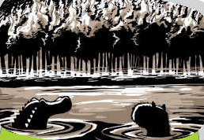

Se dicen muchas cosas sobre mí...
The Guaraní believe that my origin dates back to a time when the Earth would have collided with the Sun and a great fire ensued.
That day, the men who sank into the river to avoid burning turned into crocodiles and capybaras.
